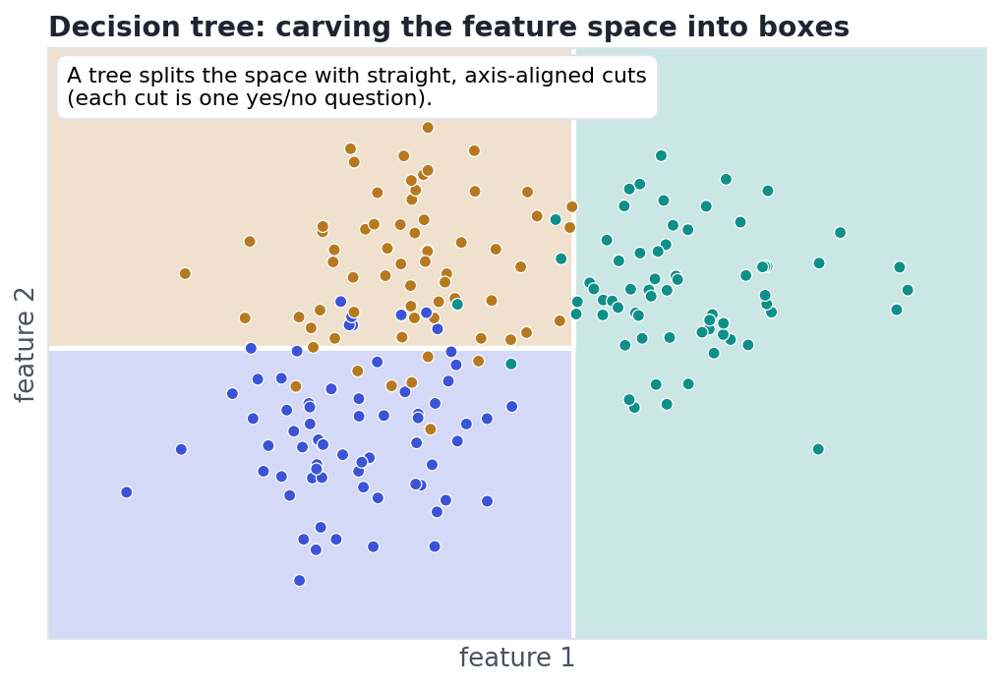

Decision Trees & Random Forests
Flexible models that need no scaling — and how ensembles tame them.
If someone asks why your model made a prediction, a decision tree can literally show them the chain of yes/no questions it asked — no other model is this readable. Trees need no feature scaling, handle mixtures of numbers and categories, and capture non-linear patterns for free. On their own they overfit badly — but bundle hundreds of them into a random forest and you get one of the most reliable, low-effort models in all of tabular machine learning. This lesson is the leap from a single interpretable model to the ensembles that win real problems.
ConceptHow a tree makes a decision
A decision tree is a flowchart of yes/no questions. At each node it asks one question about one feature ("is petal length ≤ 2.5?"), and you follow the branch that matches until you reach a leaf, which gives the prediction. Training is about choosing the questions: at every split the tree tries all features and thresholds and picks the one that best separates the classes — measured by Gini impurity or entropy, both of which just score "how mixed are the groups after this cut?" Because every question is about a single feature, the boundaries a tree draws are always straight and axis-aligned — it carves the space into boxes:

Concept · the weaknessThe catch: trees memorize
A tree with no limit will keep splitting until every training point sits in its own tiny box — 100% accurate on the data it saw, and useless on new data. That's overfitting in its purest form (Lesson 8.1). You tame it by limiting the tree's flexibility: max_depth (how many questions deep), min_samples_leaf (don't make a box for fewer than N points), or pruning (grow, then cut back weak branches). A shallow tree underfits; a deep one overfits; the craft is finding the middle — which is exactly what cross-validation (Lesson 8.7) is for.
Concept · the fixRandom forests: wisdom of many trees
Here's the beautiful idea. One deep tree is high-variance — wiggle the data and it changes completely. But if you train hundreds of trees, each on a random bootstrap sample of the rows and allowed to consider only a random subset of features at each split, you get hundreds of different, imperfect trees. Average their votes (bagging) and the errors cancel out while the signal reinforces — the random forest. The randomness is the point: it decorrelates the trees so their mistakes are independent. The result routinely beats a single tuned tree, needs almost no tuning, resists overfitting, and even reports which features mattered most (feature importances) — all for a one-line change in code.
Worked exampleFit both in scikit-learn
Watch the single deep tree ace the training set and stumble on the test set, while the forest — same data, one extra word — generalises:
from sklearn.datasets import make_classification
from sklearn.model_selection import train_test_split
from sklearn.tree import DecisionTreeClassifier
from sklearn.ensemble import RandomForestClassifier
X, y = make_classification(n_samples=400, n_features=6, n_informative=4, random_state=0)
Xtr, Xte, ytr, yte = train_test_split(X, y, test_size=0.3, random_state=0)
tree = DecisionTreeClassifier(random_state=0).fit(Xtr, ytr)
forest = RandomForestClassifier(n_estimators=200, random_state=0).fit(Xtr, ytr)
print(f"one deep tree -> train {tree.score(Xtr, ytr):.2f} test {tree.score(Xte, yte):.2f}")
print(f"random forest -> train {forest.score(Xtr, ytr):.2f} test {forest.score(Xte, yte):.2f}")one deep tree -> train 1.00 test 0.87 random forest -> train 1.00 test 0.86
The lone tree memorised the training data (perfect train score) but its test score is the honest one — and it's noticeably lower. The forest's train score is a touch less perfect, yet its test score is higher: it traded a little training accuracy for real generalisation. That gap between train and test, and closing it, is the whole game.
Interactive labYour turn — train a forest
Xtr, Xte, ytr, yte (a train/test split) are loaded, and RandomForestClassifier is imported. Train a forest of 100 trees on the training data, then assign to answer its accuracy on the test set, rounded to 2 decimals.
Xtr/Xte/ytr/yte split loaded; RandomForestClassifier imported. First Run loads scikit-learn (~15s).RandomForestClassifier(n_estimators=100, random_state=0).fit(Xtr, ytr), then rf.score(Xte, yte) is test accuracy; wrap in round(float(...), 2).rf = RandomForestClassifier(n_estimators=100, random_state=0).fit(Xtr, ytr)
answer = round(float(rf.score(Xte, yte)), 2).score on the held-out test set is the number that predicts real-world performance — always report that one, not the training score.
★ Key points to remember
- A decision tree is a flowchart of yes/no questions; each split is chosen to best separate the classes (Gini / entropy), giving axis-aligned boxes.
- Trees need no feature scaling and capture non-linearities — but an unrestricted tree overfits (memorises). Control it with
max_depth/min_samples_leaf/ pruning. - A random forest trains many decorrelated trees (random rows and random features) and averages them — bagging — cutting variance and usually beating a single tree.
- Forests need little tuning, resist overfitting, and report feature importances.
- Always judge by the test score: a tree's perfect training score means nothing on its own.
◆ Practice▸
Show solution & reasoning
No. A tree splits on a threshold of one feature at a time ("is x ≤ 5?"), and that decision is unchanged if you rescale the feature — the same rows still fall on each side. So decision trees (and forests) are scale-invariant and need no standardization, unlike distance- or gradient-based models (k-means, logistic regression, neural nets) where scaling matters a lot.
Show solution & reasoning
Reduce each tree's flexibility and/or increase diversity: lower max_depth (or raise min_samples_leaf) so individual trees memorise less; and keep/lower max_features per split to decorrelate trees further. Adding more trees (n_estimators) won't fix overfitting but stabilises the average. The goal is to shrink the train–test gap — verify each change with cross-validation, not the training score.
◎ Deep dive: Gini vs entropy, why forests reduce variance, and importance caveats▸
Gini vs entropy — and why it rarely matters. At each split the tree scores candidate cuts by how pure the resulting groups are. Gini impurity is the chance you'd mislabel a random point by the group's class mix (0 = pure); entropy is the information-theory version. In practice they give near-identical trees, so it's not a knob worth agonising over — depth and leaf-size limits matter far more.
Bias–variance, made physical. A single deep tree is low-bias, high-variance (it changes wildly with the data). Bagging many such trees and averaging leaves the low bias but slashes the variance — that's why forests work, and it's the bias–variance tradeoff from Lesson 8.1 turned into an algorithm. Boosting (Lesson 8.5) attacks the other end: it combines high-bias shallow trees to reduce bias. Two ensembles, opposite strategies.
Feature importances lie a little. Forests report how much each feature reduced impurity, which is handy but biased toward high-cardinality features (many split points) and misleading when features are correlated (importance gets split between them). For decisions that matter, prefer permutation importance (shuffle a feature, measure the accuracy drop) — more on honest interpretation in Track 10.
Be ready to explain: a tree = axis-aligned yes/no splits chosen by impurity; it overfits unless limited; a random forest = many decorrelated trees (random rows + random features) averaged to cut variance (bagging). Contrast with boosting (Lesson 8.5), which combines shallow trees to cut bias. Bonus: trees need no scaling, and permutation importance beats built-in importance.